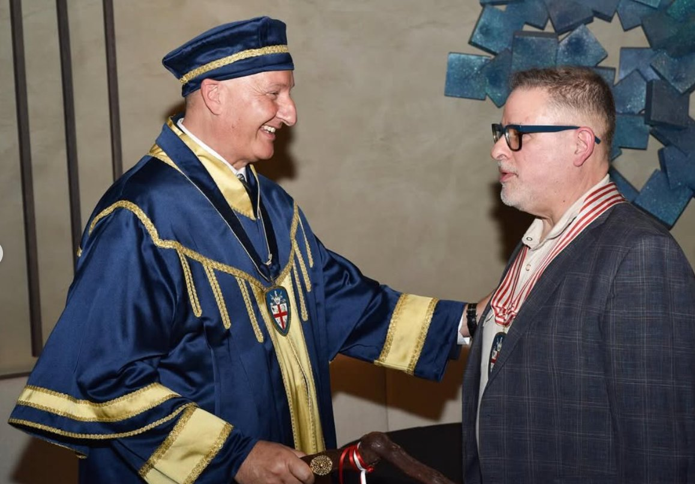
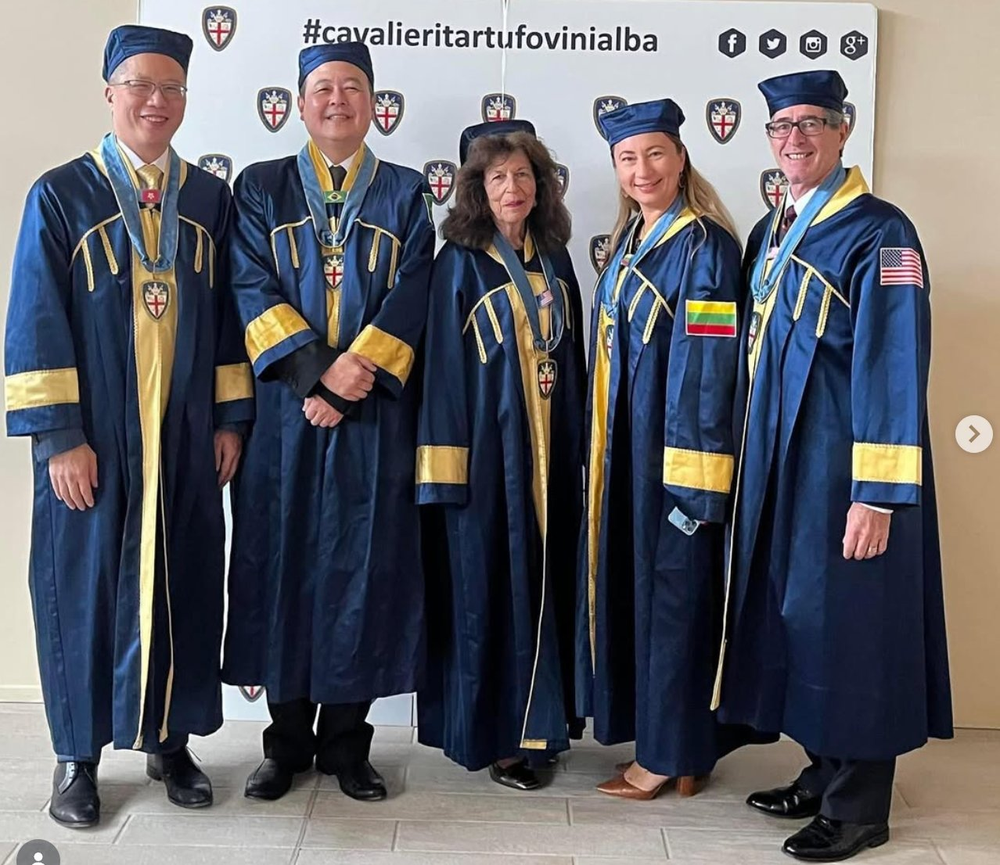
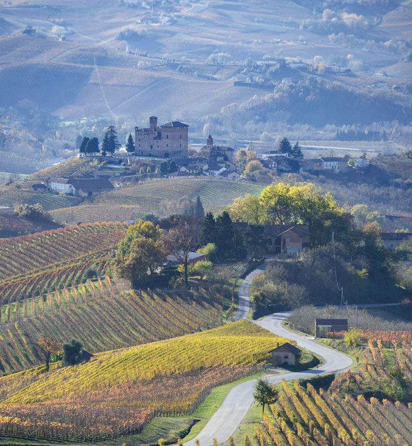

World of Wine
Why 2019 may be a generational Barolo vintage
Notes from a Knights-only vertical tasting hosted in River North last spring, with reflections from the Maestro and a guest enologist.
October 2025
An invitation to celebrate the white truffle of Alba, the great wines of the Langhe, and the enduring culture of the Italian table — convened in the city we call home.

The Order of Knights of the Truffle and Wines of Alba was born in 1967 in a small trattoria in Grinzane Cavour. Today, it spans five continents.
Chicago joined this fellowship in 2023 under the guidance of Maestro Georgia Marsh — and in doing so, accepted a quiet responsibility: to steward, in our city, a culture of wine, food, and conviviality that has been honed in Piedmont for centuries.
Our Knights are sommeliers and surgeons, restaurateurs and architects, vintners and venture capitalists. What unites us is sincere passion for the table, and a belief that the best things in life are shared.
Tuber magnatum pico — the most prized truffle in the world, harvested in the woods around Alba. The Order safeguards its name, its season, and its rituals at the table.
Barolo. Barbaresco. Roero. Barbera d'Alba. Dolcetto. Nebbiolo. The Order curates an annual Selection of the finest wines from the great designations of Piedmont.
Beyond food and wine: the unhurried ritual of breaking bread, the toast that means something, the long lunch as a form of friendship. We hold the line, here in Chicago.
Knights-only events span formal black-tie induction ceremonies to backyard burgers and Barolo — and everything in between.
Our marquee evening of the year, coinciding with the height of the Alba white truffle season. New Knights are inducted; the table is set for the occasion.
An intimate vertical drawn from a single estate, guided by a guest sommelier from Piedmont. Limited to twenty seats.
A reminder that this fellowship isn't only about black tie. Great Nebbiolo deserves a charcoal grill once a year, too.
To be a Knight is to belong to a tradition older and larger than oneself — and yet to find, in our Chicago gatherings, something entirely new: friendships forged over a shared reverence for the Italian table.
The Order asks one thing of its members: sincere passion. Everything that follows — the wines, the meals, the company — is a reward for that passion.

Notes from a Knights-only vertical tasting hosted in River North last spring, with reflections from the Maestro and a guest enologist.

What it is, what it isn't, and how to taste one properly — written for our newest Knights and curious guests alike.

A photo essay from our most recent ceremony — the robes, the medallions, the moment of induction. With remarks from Maestro Georgia Marsh.
Knights-only events span formal black-tie induction ceremonies to backyard burgers and Barolo — and everything in between.
The signature evening of our year. Investiture of new Knights, an Alba truffle menu, and a wine flight curated by the Tasting Committee.
2014–2023, one estate, one room. Led by a visiting sommelier from the Langhe.
A Chicago chef in conversation with a Piedmontese counterpart, by long-distance and at the stove. Four courses, four wines.
An open evening for prospective Knights to dine alongside the Delegation. The Maestro presents the work of the Order.
A focused exploration of Roero, Carema, Gattinara, and Valtellina — Nebbiolo's quieter expressions.
A Piedmontese summer menu — vitello tonnato, fritto misto, peaches in Moscato — with Arneis and Favorita.
A reminder that this fellowship isn't only about black tie. Great Nebbiolo deserves a charcoal grill once a year, too.
A visual record of recent Chicago events — the dinners, the investitures, the bottles, the bonds.



Since 1967, the Order has knighted people from around the world who share a genuine interest in — and passion for — the cuisine, wines, and landscape of the Langhe. Anyone who shares that passion may apply.
Complete the official application form and curriculum vitae. Send both by email to the Order's secretariat at segreteria@cavalierideltartufo.it, indicating Chicago as your Delegation of choice.
Upon acceptance, an entrance fee (set by the Chicago Delegation Council) and the first-year membership fee are due. Both can be paid by credit card, PayPal, or bank transfer through the Order.
Included: the Collar with personalized Medallion, the Certificate of Proclamation, photographs of your Investiture, and the annual membership card — which carries a 10% discount on purchases at the Castle of Grinzane.
New Knights are formally invested at a Chicago ceremony, receiving the Collar of the Order and the ribbon of the Cavalieri. From that evening forward, you have the right to attend any event of the Order worldwide — and to present new Knights of your own.
Georgia Marsh leads the Chicago Delegation with a clear vision: that the Order's traditions, shaped in the Langhe since 1967, can find an authentic and lasting home in Chicago. She convenes our events, curates our calendar, and presents new Knights to the Order.
A growing fellowship of industry professionals and passionate consumers, sponsored into the Order and invested in robes at a formal ceremony.
Whether you are a Knight of another delegation, an applicant interested in joining, a hospitality partner, or a curious friend of the Italian table — we'd be glad to hear from you.
Georgia Marsh · Maestro
chicagomaster@cavalierdeltartufo.it
@knightsofalba_chicago on Instagram
Castello di Grinzane Cavour · Via Castello 5 · 12060 Grinzane Cavour (CN) · Italy
cavalierideltartufo.it